Cotomili Pareos
Handmade from scratch, using very fine 100% white, cotton.
I use a variety of techniques including stamping on motifs and dip dyeing which means that there is great variety and each piece is unique.
 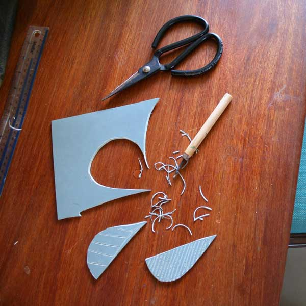
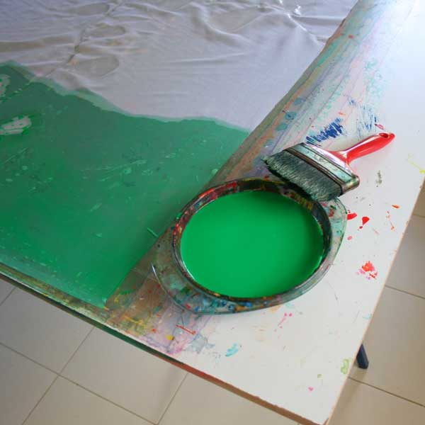
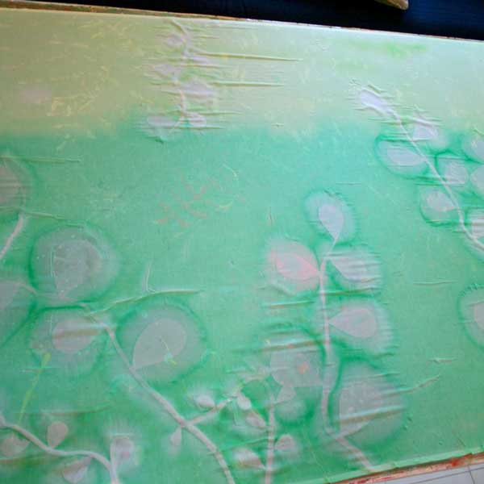
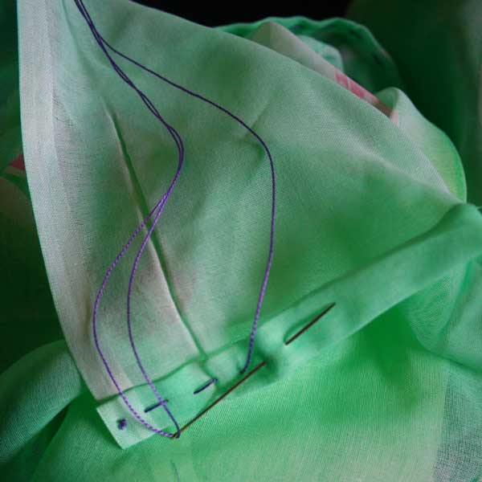
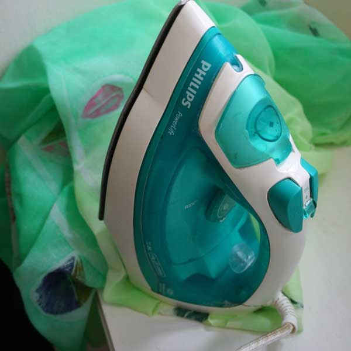
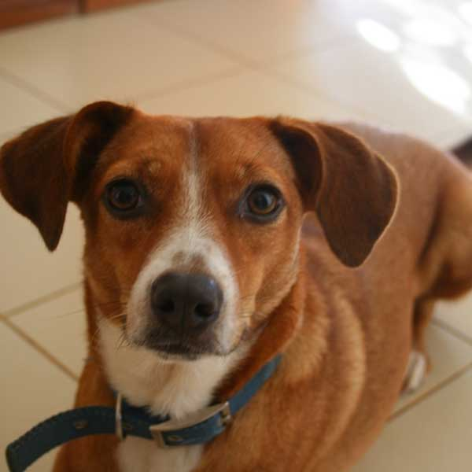
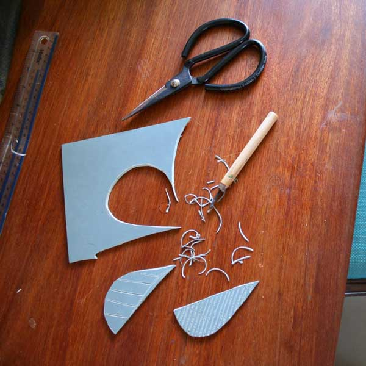
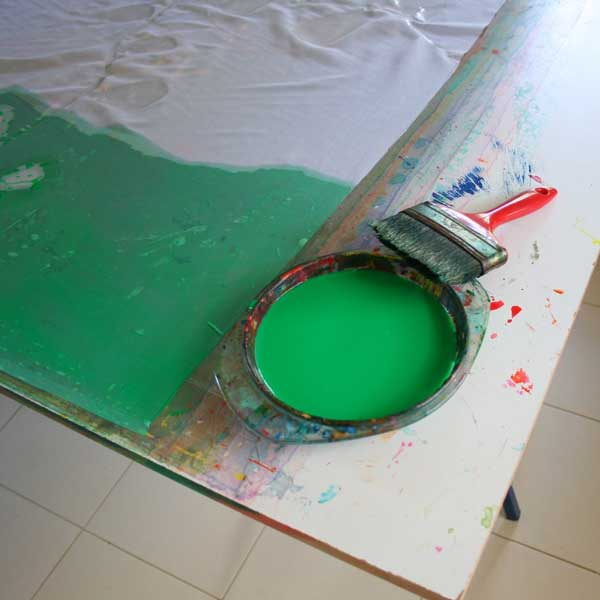
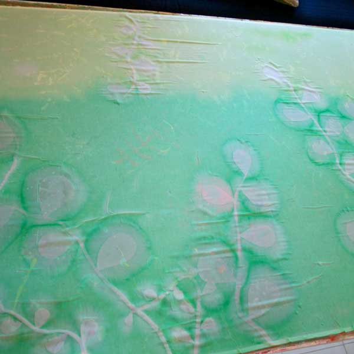
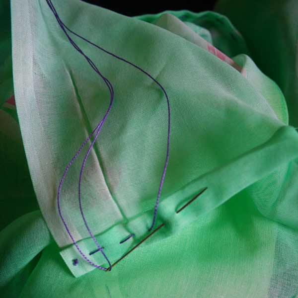
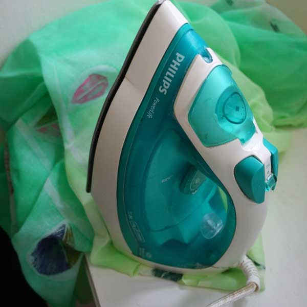
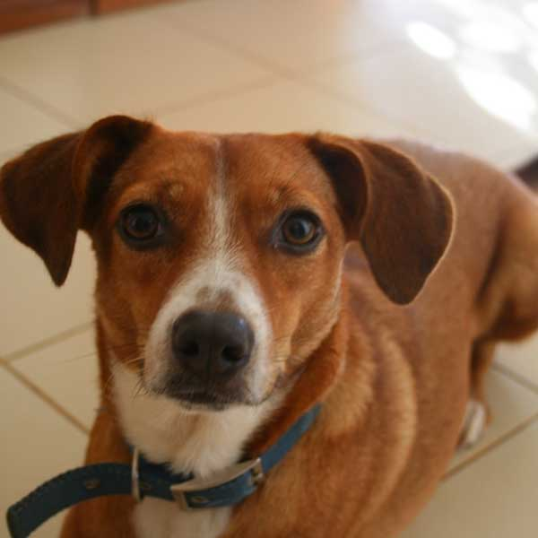
How your Cotomili Pareo was born
1. Inspiration
First came an idea. In this case, it came from a plant on my terrace.
2. Design and Print
Next came the making of the lino stamp, followed by the application of dye.
3. Needle and Thread
Once the motifs were done, the hem was handsewn with a bright thread to offset the other colours used.
4. A Lasting Finish
Last but not least, the pareo was ironed to ensure colour fastness.
5. Enjoy Happy Moments
The whole process generally takes about a day, give or take a few distractions like dogs, children and good waves.
The more you use your pareo, the softer it will become and the more, I hope, it will be entwined in the fabric of many happy moments.
COTOMILI
by Lara
Order Your Pareo
lara@cotomilibylara.com
+230 5258 5274